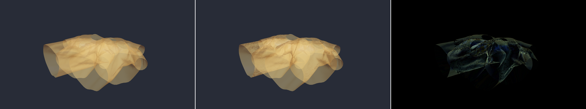
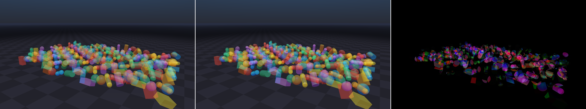
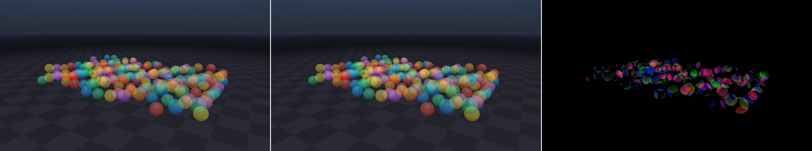
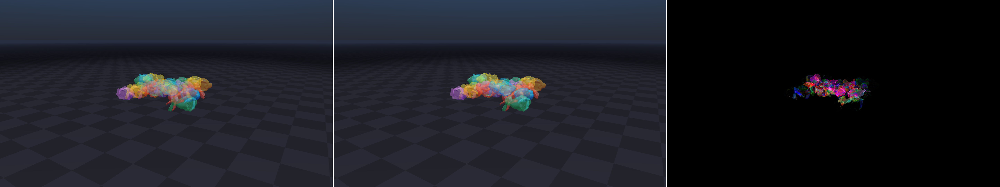

{kind=link}

cloth_shirt_4
Four transparent garment meshes from unisex_shirt.usd.
Fresh 1080p benchmark results plus orbiting visual comparisons for transparent cloth, robots, and repeated mesh-heavy scenes. The visual comparison viewer updates frame-by-frame with a mouse-draggable timeline.
| System | GPU | CPU | RAM | OS | Driver | Newton | Warp | Python |
|---|---|---|---|---|---|---|---|---|
| RTX 4090 desktop | NVIDIA GeForce RTX 4090, 24 GiB | Intel Core i9-12900K | 64 GiB | Windows 11 10.0.22635 | 595.79 | 1.4.0.dev0 | 1.14.0 | 3.12.3 |
cloth_shirt_4 OIT speedup. Sorted and OIT are effectively tied on this view.
shape_cloud_240 OIT speedup over sorted blending.
mesh_spheres_160 OIT speedup over sorted blending.
bunny_meshes_24 OIT speedup over sorted blending.
Sorted blending draws transparent objects back-to-front and uses conventional alpha blending. Weighted OIT accumulates transparent fragments into order-independent buffers and resolves the result approximately. The OIT path avoids object-level ordering sensitivity, while visual differences remain scene-dependent.
| System | Scene | Geometry | Sorted mean ms | OIT mean ms | OIT speedup | Mean abs RGB | RMS RGB | Max abs RGB |
|---|---|---|---|---|---|---|---|---|
| RTX 4090 desktop | cloth_shirt_4 |
4 transparent shirt cloth meshes, 50,944 cloth triangles | 10.961 | 11.058 | -0.9% | 0.856 | 3.063 | 64 |
| RTX 4090 desktop | shape_cloud_240 |
240 transparent primitive shapes plus opaque ground | 3.638 | 2.941 | +23.7% | 1.846 | 6.295 | 71 |
| RTX 4090 desktop | mesh_spheres_160 |
160 transparent generated sphere mesh instances | 1.846 | 1.357 | +36.0% | 0.994 | 4.386 | 66 |
| RTX 4090 desktop | bunny_meshes_24 |
24 transparent bunny.usd mesh instances, 292,800 mesh triangles | 2.002 | 1.484 | +34.9% | 0.360 | 3.112 | 93 |

cloth_shirt_4Four transparent garment meshes from unisex_shirt.usd.

shape_cloud_240Mixed primitive transparency stress test.

mesh_spheres_160Repeated transparent mesh spheres with opaque ground.

bunny_meshes_24Twenty-four transparent bunny.usd mesh instances.
| System | Scene | Description | Mean abs RGB | RMS RGB | Max abs RGB | Contact sheet |
|---|---|---|---|---|---|---|
| RTX 4090 desktop | franka_cloth |
Franka arm with transparent unisex_shirt.usd cloth |
0.183 | 1.190 | 46 | PNG |
| RTX 4090 desktop | h1_cloth |
H1 robot with transparent Style3D jacket cloth | 0.037 | 0.484 | 38 | PNG |
| RTX 4090 desktop | franka_robot |
Single transparent Franka arm | 0.042 | 0.570 | 69 | PNG |
| RTX 4090 desktop | franka_robot_grid |
3x3 grid of transparent Franka arms | 0.082 | 0.844 | 63 | PNG |
Data sources: benchmark/results.json,
benchmark/summary.md, and
orbit/summary.md. The difference images multiply
absolute RGB differences to make subtle ordering/resolution differences visible.
{kind=link}
{kind=link}
{kind=link}
{kind=link}
{kind=link}
{kind=link}
{kind=link}